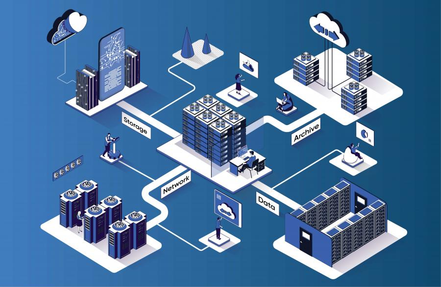

О проекте
Проблема
Московский Политех сталкивается с рядом проблем в сфере отчётности:
- Разрозненность данных
- Неавтоматизированная обработка отчётов
- Отсутствие инструментов прогнозирования
- Сложность консолидации данных
Решение
Наш проект предлагает комплексное решение:
- Централизованная платформа - единое хранилище данных
- Интерактивные дашборды - автоматическая генерация отчётов
- Предиктивная модель для прогнозирования показателей
Архитектура системы
Технологический стек
Python
PostgreSQL
Apache Airflow
Power BI